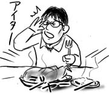

来週一週間、夏休みを取りました。大学友人が尋ねてくるので一緒にこの辺を観光します。ラスベガスやグランドキャニオンまで足を伸ばす予定です。こちらに来て初めてのちゃんとしたバケーションです。楽しみだなぁ。
ということを、ちょうど１週間早い夏休みを取って家でダラダラしていた西原さんに話したところ「すげー！夏休みみたい！」と言われましたよ。ハハハ。
もっとも、マーフィーの法則(死語)で、なぜか休み前は仕事がやたら忙しくなり、先週くらいから毎日夜遅くまで働くことに。夕食はチキンラーメンかふりかけご飯で誤魔化していました。おかずのストックが切れてしまったので。なぁに、来週は外食中心になるので挽回可能ですよ。
と思っていたのですが、今日久しぶりに鏡を見たら、やたらとやつれた感じだったのでビビりました。キューバ料理のチキンだけでは無理がありましたか。ボク、大丈夫？(What Me Worry?)
まぁ、寝たら治りましたけどね。睡眠すごい、超すごい。
昨日の食事後、Duyがみんなの残り物を集めていました。僕は残ったチキンを夕食にするべく、持ち帰りボックスに詰めていたのですが、食べ終わった骨でいいからくれ、というので素直に渡しました。
話を聞くと、Duyの隣の家の人が旅行に出かけているらしく、留守中に犬をあずかっているのでその餌にしたいとのこと。なるほどね、とその時は納得したのでした。
そして夜になり、キューバ料理に大量に使われている生のタマネギのことを思い出しました。犬、無事ならいいんですが。
気になって仕方なかったので、朝、Duyのオフィスに飛んで行きましたとも。
僕：昨日の残り物、犬にあげたの？
Duy：喜んで全部食べたよ。
僕：全部！タマネギも！？
Duy：全部全部。パクパクって。
僕：し、死んでないよね？
Duy：？。ピンピンしてるよ？
無事だったみたいです！
半年間一緒に働いていたコントラクターのHowieが、次の派遣先へ異動になるとのことで、お別れグループランチが催されました。
Howieは、実験の待ち時間に鶴の折り方を教えたところ、僕の折ったのと彼の折ったのをつがいにして「ヘイ、セックスしてるぜ」と言ったり、実験装置を取り出しているのを見て「ヘイ、新型の核兵器だ！」と言い放ったりするイカしたハゲ親父なので、いなくなるのはちょっと残念です。
グループランチは、キューバレストランで行われました。キューバ料理はぶった切った生のタマネギと酸っぱいガーリックソースが特徴です。
チキンを注文したところ、皿に鳥が丸々一匹乗っかってきました。びっくりして他の人の皿を見渡すと、チキンの足１本という常識的な量が適度な皿に乗っています。一体何が違うのか、といぶかしげな顔をしていたところ、みんなが「あ、ここはランチサイズって注文しないとデッカイのが来るんだよ」とニヤニヤしながら教えてくれました。

またやられた！！